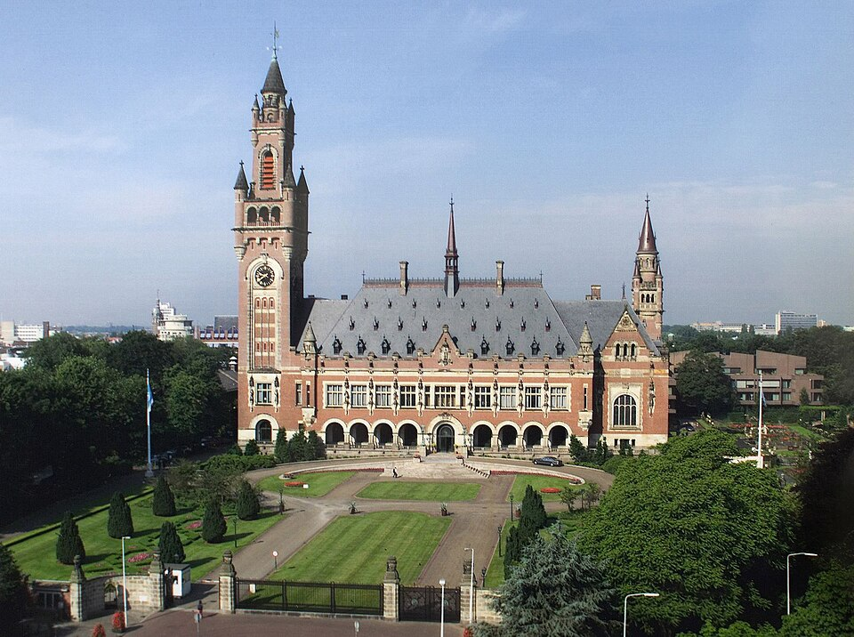

व्यापार
व्यापारटैक्स में छूट के बाद भी रोजगार और वेतन न बढ़ाने पर पीएम मोदी ने कॉर्पोरेट्स को घेरा
प्रधानमंत्री नरेंद्र मोदी ने फिक्की के कार्यक्रम में कॉर्पोरेट जगत पर निशाना साधते हुए कहा कि टैक्स में राहत मिलने के बावजूद कंपनियों ने कर्मचारियों का वेतन और रोजगार नहीं बढ़ाया.
ताज़ा ख़बरें
सोनिया गांधी ने मानवाधिकार कार्यकर्ता ग्रासा माशेल को इंदिरा गांधी शांति पुरस्कार प्रदान किया
कांग्रेस संसदीय दल की अध्यक्ष सोनिया गांधी ने मोजाम्बिक की मानवाधिकार कार्यकर्ता ग्रासा माशेल को वर्ष 2025 के 'इंदिरा गांधी शांति, निरस्त्रीकरण और विकास पुरस्कार' से सम्मानित किया।
राष्ट्रीयनिशांत कुमार को पीछे धकेलने के मामले में SSG ने मानी मानवीय भूल
बिहार में नीतीश सेतु के निरीक्षण के दौरान मुख्यमंत्री के सुरक्षाकर्मी द्वारा निशांत कुमार को पीछे धकेलने का वीडियो वायरल होने के बाद, विशेष सुरक्षा दल (SSG) ने इसे मानवीय भूल बताया है।
अंतरराष्ट्रीयभारत, अमेरिका, जापान और ऑस्ट्रेलिया 2027 में करेंगे पहला संयुक्त क्वाड समुद्री अभ्यास
भारत, अमेरिका, जापान और ऑस्ट्रेलिया ने मनीला में आयोजित क्वाड शिखर सम्मेलन में 2027 में पहले संयुक्त समुद्री सैन्य अभ्यास की घोषणा की है, जिससे यह समूह अब केवल संवाद तक सीमित नहीं रहा।
 अंतरराष्ट्रीय
अंतरराष्ट्रीयबांग्लादेश में भड़की हिंसा, ढाका में देसी बम धमाके और तोड़फोड़
बांग्लादेश में अवामी लीग के बंद के दौरान व्यापक हिंसा भड़की है। राजधानी ढाका में देसी बम फटे और कई जगहों पर आगजनी व तोड़फोड़ की खबरें हैं, जिससे सुरक्षा हालात तनावपूर्ण हो गए हैं।
अंतरराष्ट्रीयप्यू रिसर्च सेंटर की नई रिपोर्ट में 2070 तक वैश्विक धार्मिक आबादी के बदलावों का अनुमान
प्यू रिसर्च सेंटर और पोलैंड के इंस्टीट्यूट फॉर द स्टडी ऑफ रिलिजन की नई रिपोर्ट के अनुसार, 2070 तक मुसलमानों की आबादी सबसे तेज़ी से बढ़ेगी और भारत हिंदू बहुल देश बना रहेगा।
 राष्ट्रीय
राष्ट्रीयवर्ष 2027 के केंद्रीय अवकाशों पर भ्रामक दावा खारिज, DoPT ने जारी की सूची
पीआईबी फैक्ट चेक ने वर्ष 2027 के दौरान दिल्ली में केंद्रीय सरकारी कार्यालयों में छुट्टियों को लेकर फैल रहे दावे को खारिज किया है। कार्मिक मंत्रालय के अनुसार, कुल 17 राजपत्रित अवकाश तय किए गए हैं।
 राष्ट्रीय
राष्ट्रीयप्रधानमंत्री मोदी ने कहा, नशामुक्त भारत के लिए दिखावे की नहीं, सामूहिक प्रयासों की जरूरत
प्रधानमंत्री नरेंद्र मोदी ने दिल्ली में एक सम्मेलन को संबोधित करते हुए कहा कि नशामुक्त भारत के लिए केवल दिखावे का काम नहीं चलेगा। उन्होंने आध्यात्मिक संगठनों, स्कूलों और आम लोगों की भागीदारी पर जोर दिया।
अंतरराष्ट्रीय2035 तक मुस्लिम आबादी बन सकती है दुनिया का सबसे बड़ा धार्मिक समूह: रिपोर्ट
प्यू रिसर्च सेंटर की रिपोर्ट के अनुसार, उच्च प्रजनन दर और युवा आबादी के कारण 2035 तक मुस्लिम आबादी दुनिया का सबसे बड़ा धार्मिक समूह बन सकती है.
 अंतरराष्ट्रीय
अंतरराष्ट्रीयमैकडॉनल्ड्स पूर्व कर्मचारी का आरोप, युवा कर्मियों के सुरक्षा तरीके बदले कंपनी
मैकडॉनल्ड्स की पूर्व कर्मचारी होप ने कंपनी से कम उम्र के कर्मियों के सुरक्षा तरीकों को बदलने की अपील की है। लंदन की एक अदालत ने कंपनी के खिलाफ भेदभाव के सैकड़ों मामलों में कानूनी कार्रवाई आगे बढ़ाने की अनुमति दी है।
राष्ट्रीयमदुरई के तनिष्क शोरूम में बड़ी चोरी, टैटू और यूट्यूब चैनल से पकड़ा गया आरोपी
मदुरई के एक ज्वेलरी शोरूम से करोड़ों के सोने-हीरे के जेवर चुराने वाले आरोपी को पुलिस ने टैटू और सोशल मीडिया की मदद से गिरफ्तार कर लिया है।
 राष्ट्रीय
राष्ट्रीयमध्य प्रदेश: बीजेपी विधायक सचिन बिरला का खनन अनुमति को लेकर पत्र वायरल
मध्य प्रदेश के खरगोन जिले से भाजपा विधायक सचिन बिरला का एक पत्र सोशल मीडिया पर वायरल हो रहा है, जिसमें उन्होंने बिना उनकी अनुशंसा के खनन से जुड़ी अनुमति न देने की मांग की है।
 खेल
खेलजसप्रीत बुमराह टेस्ट क्रिकेट में भारत के 10वें सबसे ज्यादा विकेट लेने वाले गेंदबाज बने
तेज गेंदबाज जसप्रीत बुमराह ने वेलिंगटन टेस्ट में टॉम ब्लंडेल को आउट कर जवागल श्रीनाथ का रिकॉर्ड पीछे छोड़ा। वह भारत के लिए टेस्ट में 10वें सबसे सफल गेंदबाज बन गए हैं।
राष्ट्रीयकश्मीर अब स्थानीय आतंकियों से पूरी तरह मुक्त: गृह मंत्री अमित शाह
लश्कर कमांडर लतीफ भट के मारे जाने के बाद केंद्रीय गृह मंत्री अमित शाह ने कहा कि कश्मीर अब स्थानीय स्तर पर भर्ती किए गए आतंकवादियों से मुक्त हो गया है।
 राष्ट्रीय
राष्ट्रीयहिमाचल प्रदेश विधानसभा में मंत्री के बयान पर हंगामा, राफेल और ऑपरेशन सिंदूर पर विवाद
हिमाचल प्रदेश विधानसभा में मंत्री जगत सिंह नेगी के राफेल विमान और ऑपरेशन सिंदूर से जुड़े बयानों पर भारी हंगामा हुआ। विपक्षी दल भाजपा ने इसे पाकिस्तान की भाषा करार दिया, जिसके बाद सदन की कार्यवाही कुछ देर के लिए स्थगित करनी पड़ी।
टेकमल प्रत्यारोपण क्या है और गंभीर बीमारियों के इलाज में इसकी उपयोगिता
स्वस्थ इंसान के मल में मौजूद सूक्ष्मजीव गंभीर बीमारियों के इलाज में मददगार साबित हो रहे हैं। वैज्ञानिक इसे भविष्य के चिकित्सा उपचार की एक बड़ी उम्मीद मान रहे हैं।
 राष्ट्रीय
राष्ट्रीयसोनिया गांधी ने ग्रासा माशेल को दिया इंदिरा गांधी शांति पुरस्कार
कांग्रेस संसदीय दल की अध्यक्ष सोनिया गांधी ने दिल्ली में आयोजित समारोह में मोजाम्बिक की मानवाधिकार कार्यकर्ता ग्रासा माशेल को इंदिरा गांधी शांति पुरस्कार प्रदान किया।
टेककंपनियों के बोर्डरूम में आर्टिफिशियल इंटेलिजेंस की एंट्री, छंटनी और रणनीति पर देगी सुझाव
एरिस्ट के सीईओ माइकल आयोफ ने कहा कि आने वाले समय में एआई एजेंट कंपनियों को छंटनी, नए उत्पाद और संगठनात्मक बदलावों पर सलाह दे सकते हैं, हालांकि अंतिम अधिकार अधिकारियों के पास ही रहेगा।
 राष्ट्रीय
राष्ट्रीयसोनम वांगचुक ने लद्दाख परिषद चुनावों से पहले हाई कोर्ट में नजरबंदी को दी चुनौती
पर्यावरण कार्यकर्ता सोनम वांगचुक ने लद्दाख स्वायत्त पहाड़ी विकास परिषद के चुनावों से पहले अपनी कथित नजरबंदी को जम्मू-कश्मीर और लद्दाख हाईकोर्ट की लेह बेंच में चुनौती दी है।

अंतरराष्ट्रीयअंतरराष्ट्रीय न्यायालय ने म्यांमार को रोहिंग्या नरसंहार का दोषी ठहराया
अंतरराष्ट्रीय न्यायालय ने म्यांमार को रोहिंग्या समुदाय के नरसंहार का दोषी पाया है। अदालत के इतिहास में यह पहला मौका है जब किसी देश को इस अपराध के लिए जिम्मेदार ठहराया गया है।
 अंतरराष्ट्रीय
अंतरराष्ट्रीयट्रंप, शी जिनपिंग और पुतिन के बीच ऐतिहासिक त्रिपक्षीय शिखर सम्मेलन
चीन के शेन्ज़ेन शहर में अमेरिकी राष्ट्रपति डोनाल्ड ट्रंप, चीनी राष्ट्रपति शी जिनपिंग और रूसी नेता व्लादिमीर पुतिन के बीच परमाणु हथियारों में कमी और वैश्विक स्थिरता को लेकर एक घंटे से अधिक लंबी बैठक हुई।
राष्ट्रीयसड़क परिवहन मंत्रालय ने बढ़ाई गाड़ियों के पॉल्यूशन सर्टिफिकेट की वैधता
केंद्र सरकार ने वाहनों के पॉल्यूशन अंडर कंट्रोल सर्टिफिकेट के नियमों में बदलाव किया है। नई BS-VI गाड़ियों का PUC अब तीन साल तक वैध रहेगा।
 राष्ट्रीय
राष्ट्रीयबॉम्बे हाईकोर्ट ने मुंबई के मुसाफिरखाना पर बीएमसी की कार्रवाई पर लगाई रोक
बॉम्बे हाईकोर्ट ने मुंबई के भिंडी बाजार स्थित मुसाफिरखाना को गिराने की बीएमसी की कार्रवाई पर 25 नवंबर तक रोक लगा दी है। कोर्ट ने संपत्ति के मालिकाना हक और वक्फ बोर्ड से जुड़े मामलों पर भी सवाल उठाए हैं।
अंतरराष्ट्रीयअमेरिका, रूस और चीन की शेनझेंन बैठक की तुलना याल्टा सम्मेलन से
अमेरिका, रूस और चीन के नेताओं के बीच शेनझेंन में होने वाली बैठक की तुलना 1945 के याल्टा सम्मेलन से की जा रही है। इस मुलाकात में परमाणु हथियारों और वैश्विक शक्ति संतुलन पर चर्चा हो रही है।
अंतरराष्ट्रीयAPEC शिखर सम्मेलन में ट्रंप, जिनपिंग और पुतिन की अहम बैठक, परमाणु वार्ता पर बनी सहमति
APEC शिखर सम्मेलन के दौरान अमेरिकी राष्ट्रपति डोनाल्ड ट्रंप, चीनी राष्ट्रपति शी जिनपिंग और रूसी राष्ट्रपति व्लादिमीर पुतिन के बीच ऐतिहासिक त्रिपक्षीय बैठक हुई, जिसमें परमाणु वार्ता और संयुक्त राष्ट्र सुधारों पर सहमति बनी।
राष्ट्रीयकानपुर में कारोबारी के बेटे की मौत का मामला, गर्लफ्रेंड समेत अन्य पर हत्या का केस दर्ज
कानपुर के रुद्राग्रीन अपार्टमेंट में छठी मंजिल से गिरकर हुई कागज कारोबारी के बेटे संभव खंडेलवाल की मौत के मामले में नया मोड़ आया है। पिता की शिकायत पर पुलिस ने हत्या का केस दर्ज कर लिया है।
राष्ट्रीयशराब पीने के आरोपों पर पंजाब के सीएम भगवंत मान का पलटवार
पंजाब के मुख्यमंत्री भगवंत मान ने शराब पीने के विपक्षी आरोपों का जवाब देते हुए कहा कि जनता उनके काम से संतुष्ट है और निजी हमलों के बजाय सरकार के कामकाज पर बात होनी चाहिए।
 राष्ट्रीय
राष्ट्रीयसोनिया गांधी की पुस्तक विमोचन पर राहुल गांधी के बयान से देश में छिड़ी बहस
सोनिया गांधी के संस्मरण के विमोचन पर राहुल गांधी द्वारा साझा किए गए एक संस्मरण को लेकर राजनीतिक और सांस्कृतिक गलियारों में बहस छिड़ गई है, जिसमें भारतीय परंपरा और शास्त्रों में दांपत्य आत्मीयता पर चर्चा हो रही है.
राष्ट्रीयबॉम्बे हाईकोर्ट ने दाऊद इब्राहिम से जुड़ी मुसाफिरखाना इमारत के विध्वंस पर लगाई रोक
बॉम्बे हाईकोर्ट ने मुंबई के भिंडी बाजार स्थित जर्जर हाजी इस्माइल हाजी हबीब मुसाफिरखाना के विध्वंस पर गुरुवार को रोक लगा दी है। यह संपत्ति भगोड़े गैंगस्टर दाऊद इब्राहिम से जुड़ी बताई जाती है।
 व्यापार
व्यापारआईपीएल से संन्यास के बाद भी बरकरार है महेंद्र सिंह धोनी की ब्रांड वैल्यू
भारतीय क्रिकेट टीम के पूर्व कप्तान महेंद्र सिंह धोनी ने आईपीएल से संन्यास की घोषणा कर दी है, लेकिन उनकी लोकप्रियता और ब्रांड वैल्यू अभी भी शीर्ष पर बनी हुई है।
 राष्ट्रीय
राष्ट्रीयआगामी विधानसभा चुनाव लड़ने के संकेत दिए समाजवादी पार्टी के नेता आजम खान
समाजवादी पार्टी के वरिष्ठ नेता आजम खान ने आगामी विधानसभा चुनाव लड़ने के संकेत दिए हैं। साथ ही उन्होंने कांग्रेस के साथ गठबंधन और असदुद्दीन ओवैसी पर तीखे तंज कसे हैं।
अंतरराष्ट्रीयपेरू में खराब मौसम और अल नीनो के खतरे के बीच फ्यूल सप्लाई इमरजेंसी घोषित
दक्षिण अमेरिकी देश पेरू ने अल नीनो के कारण भारी बारिश और बाढ़ की आशंका को देखते हुए देश भर में आठ महीने के लिए फ्यूल सप्लाई इमरजेंसी का ऐलान किया है।
 व्यापार
व्यापारदेश में तेजी से बढ़ रहे पर्सनल लोन, 46 से 55 वर्ष के लोग आगे
पैसाबाजार के नए आंकड़ों के अनुसार देश में पर्सनल लोन लेने वालों की संख्या में 32 प्रतिशत की बढ़ोतरी हुई है। इसमें 46 से 55 वर्ष की आयु वर्ग के लोगों की संख्या में सबसे अधिक 70 प्रतिशत का उछाल दर्ज किया गया है।
राष्ट्रीयअसम में सड़क सुरक्षा को लेकर सख्ती, हेलमेट न पहनने पर वाहन होंगे जब्त
काजीरंगा के पास हाल ही में हुए सड़क हादसे में 26 लोगों की मौत के बाद असम पुलिस ने ट्रैफिक नियमों के उल्लंघन पर जीरो टॉलरेंस की नीति अपनाई है। गुवाहाटी समेत कई इलाकों में सघन चेकिंग अभियान शुरू किया गया है।
राष्ट्रीययूनिवर्सिटी बनाने की कीमत चुकानी पड़ी: आजम खान का ED की कार्रवाई पर बयान
समाजवादी पार्टी के वरिष्ठ नेता आजम खान ने प्रवर्तन निदेशालय की कार्रवाई पर प्रतिक्रिया दी है। उन्होंने दावा किया कि उन्हें ऐसे मामलों में वर्षों जेल में रहना पड़ा, जिनमें सजा बेहद कम थी।
राष्ट्रीयभारत अमीर देश लेकिन स्वच्छता में स्थिति खराब: सुप्रीम कोर्ट
सुप्रीम कोर्ट ने ठोस कचरा प्रबंधन नियमों के पालन में ढिलाई पर चिंता जताई है। अदालत ने कहा कि खराब स्वच्छता और वेस्ट मैनेजमेंट से देश की छवि प्रभावित होती है।
अंतरराष्ट्रीयआवेदन के दो दशक बाद भी भारत को क्यों नहीं मिल पाई एपेक की सदस्यता?
एशिया पैसिफिक इकनॉमिक कोऑपरेशन (एपेक) शिखर सम्मेलन चीन में जारी है, लेकिन भारत आवेदन के बावजूद इसका हिस्सा नहीं है। कूटनीतिक और व्यापारिक वजहों से भारत की सदस्यता अब तक अटकी हुई है।
 व्यापार
व्यापारभारत में घटी सस्ते स्मार्टफोन की मांग, प्रीमियम फोन के बाजार में तेजी
भारत के स्मार्टफोन बाजार में बड़ा बदलाव आया है। साइबरमीडिया रिसर्च (CMR) की रिपोर्ट के अनुसार, 7 हजार रुपये से कम कीमत वाले बजट फोन की शिपमेंट में भारी गिरावट आई है, जबकि 25 हजार रुपये से महंगे प्रीमियम स्मार्टफोन की मांग तेजी से बढ़ी है।
व्यापार8वें वेतन आयोग में पेंशनर्स संगठन की मांग, न्यूनतम पेंशन ₹45000 हो
भारत पेंशनर्स समाज ने 8वें वेतन आयोग के तहत पेंशन को अंतिम वेतन के 50% से बढ़ाकर 67% करने, फैमिली पेंशन 50% करने और न्यूनतम पेंशन ₹45,000 तय करने की मांग उठाई है।
अंतरराष्ट्रीयचीन में शी जिनपिंग, डोनाल्ड ट्रंप और व्लादिमीर पुतिन के बीच त्रिपक्षीय बैठक शुरू
चीन के शेन्जेन में एपीईसी शिखर सम्मेलन के दौरान अमेरिकी राष्ट्रपति डोनाल्ड ट्रंप, चीनी राष्ट्रपति शी जिनपिंग और रूसी राष्ट्रपति व्लादिमीर पुतिन ने परमाणु हथियार, ईरान और यूक्रेन संघर्ष जैसे अहम मुद्दों पर उच्च स्तरीय बातचीत की।